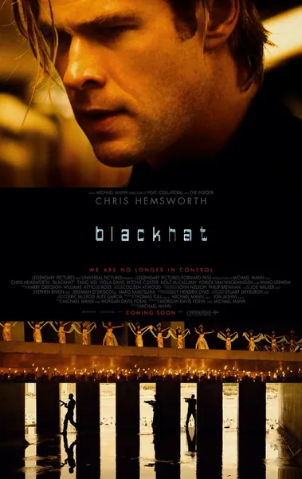

Фильм · 2015 · Драма, Триллер
Хакер Николас Хэтэуэй одновременно совершает две атаки: обнуляет фьючерсы на китайской бирже и провоцирует аварию на атомной электростанции. Не имея иного выхода, спецслужбы временно освобождают его, чтобы он помог выследить своего бывшего «коллегу». Майкл Манн уходит от клише о «хакере в капюшоне» и показывает, как кибервойна выглядит на самом деле: цепочки доверия, уязвимости аппаратного обеспечения, подставные фирмы и стоящие в тени государства. Стильный, неспешный и выверенный триллер.
Hacker Nicholas Hathaway stages two attacks at once: zeroing out futures on a Chinese exchange and triggering an accident at a nuclear plant. With no other options, the agencies temporarily release him to help hunt his former 'colleague'. Michael Mann shoots not the 'hooded hacker' cliché but what cyber warfare really looks like: chains of trust, hardware vulnerabilities, shell companies and states in the shadows. A stylish, slow-burning, precise thriller.
← Вернуться в каталог IT Movies